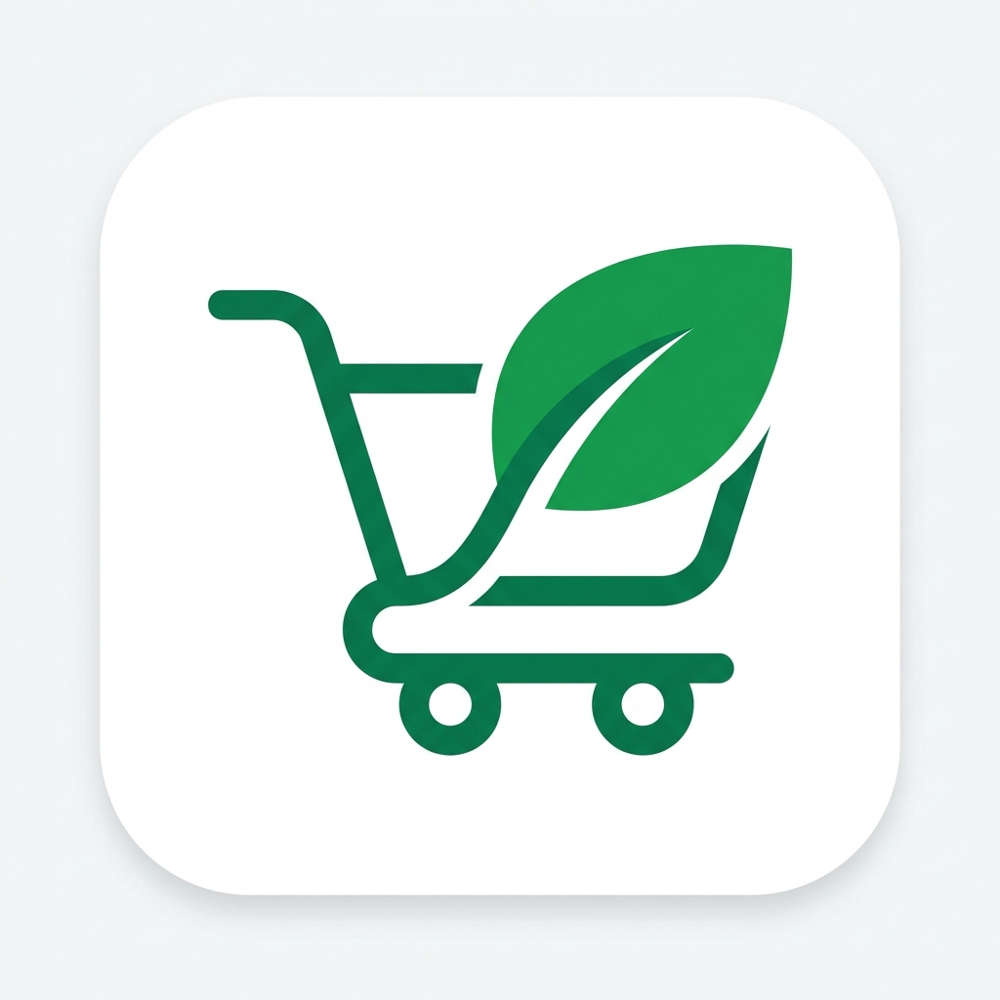
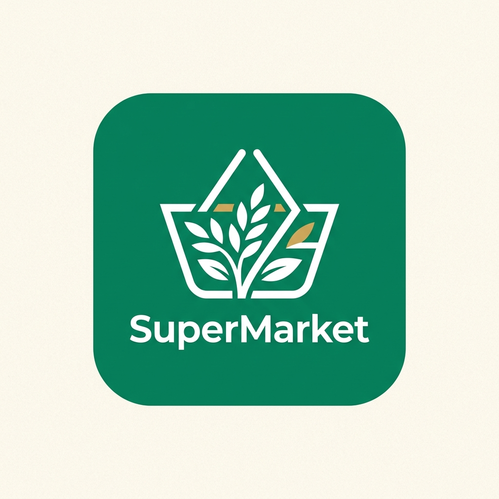
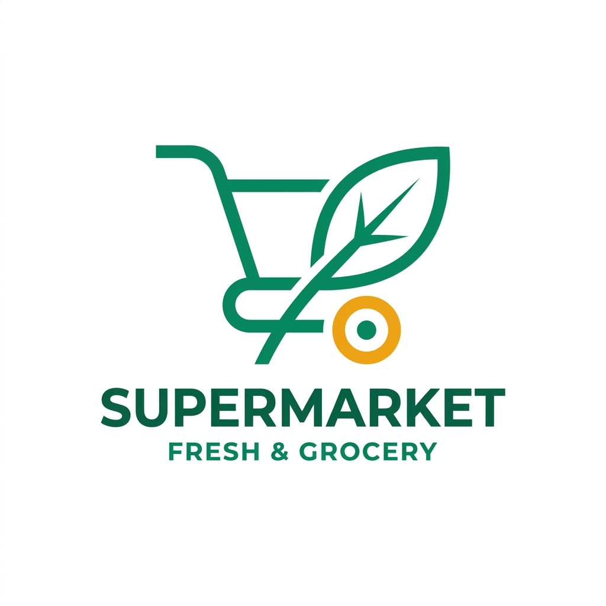

Trois propositions vectorielles 2D créées pour remplacer les styles 3D génériques et offrir une identité visuelle digne d'une grande enseigne agro-alimentaire moderne.

Un tracé géométrique épuré combinant un caddie et une grande feuille fraîche bio. Clarté maximale, zéro artefact IA.

Un panier d'abondance en lignes blanches précises avec épis de blé et feuillage, sur fond émeraude officiel et lettrage premium.

Design géométrique alliant le vert profond et l'or chaud avec le nom complet en dessous. Idéal pour l'en-tête et enseignes physiques.
💡 Indiquez simplement dans le chat : Option 1, Option 2 ou Option 3.
L'option choisie sera immédiatement détourée, intégrée à la Navbar, au Favicon et recompilée dans l'APK mobile.